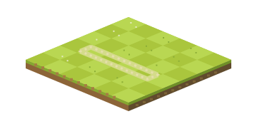
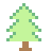
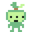
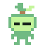
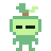
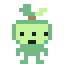
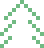
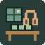

PULAU KECIL DI DESKTOPMU
Sedikit fokus.
Satu pulau tumbuh.
Selesaikan satu sesi, tumbuhkan satu pohon. Momo menemani dan merawat kebunmu sementara kamu mengerjakan hal yang penting.


Kebunmu tumbuh setiap sesi.
SATU APLIKASI, BANYAK TEMAN
Semua yang kamu butuhkan
untuk hari yang lebih bermakna.
Fokus & Pomodoro
Atur durasi fokus dan istirahat sesuai ritme kerjamu. Lingkaran waktu menunjukkan sisa sesi secara visual, tanpa angka yang mengganggumu.
Kebun & Pohon
Setiap sesi fokus yang selesai menumbuhkan satu pohon. Lima jenis pohon tropis: pisang, mangga, durian, sawit, dan jambu — masing-masing tampil sesuai musim aktif.
Musik & Lirik
Playlist audio lokal dengan artwork, timeline, dan kontrol sesi media Windows. Lirik bertimestamp dari LRCLIB muncul selaras dengan lagu, lengkap dengan koreksi waktu per rekaman.
Mode Tampilan
Panel penuh, bilah minimize, atau pet desktop. Momo berjalan menghadap kiri-kanan dan perlahan menjauhi kursor saat mode pet aktif.
Istirahat Bermakna
Saat istirahat, Moss Island menyajikan pengingat minum air, ajakan meregangkan tubuh, dan momen bersama Momo sebelum kembali ke sesi berikutnya.
Snap & Tray
Jendela mengambang bebas dan menempel ke tepi layar secara otomatis dalam ambang 10%. Akses cepat lewat tray dan shortcut global Ctrl+Shift+M.








KENALAN DENGAN TEMAN KECILMU
Ia sibuk merawat kebun.
Kamu, satu hal dulu.
Momo berjalan acak menjelajahi petak kosong pulau, menyiram tunas tiap 60 detik aktif, merawat pohon tiap 90 detik. Di antara jadwal berkebun, ia menari, tidur, makan, menyanyi, atau sekadar beristirahat.
Momo juga bereaksi terhadap musim aktif: mengipas-ipas saat panas, menghangatkan tangan saat dingin, mengagumi daun gugur musim gugur, dan menginspeksi bunga musim semi.
DARI TUNAS KE POHON
Setiap sesi meninggalkan bekas.
Langsung muncul saat sesi fokus dimulai. Momo segera datang untuk menyiram dan memupuk.

Tumbuh setelah sesi selesai. Dijadwalkan disiram rutin setiap 30 detik aktif.
Pohon matang dikunjungi tiap 60 detik aktif. Tampil berbeda sesuai musim dan spesies.
Lima spesies: pisang, mangga, durian, sawit, jambu — masing-masing dengan detail bunga, buah, dan aksen musiman yang unik.
EMPAT MUSIM DI PULAUMU
Pulau yang ikut berubah
bersamamu.
Semi
- Gerimis sesekali di latar belakang
- Momo menginspeksi bunga baru
- Pohon tampil dengan bunga lembut
- Spora melayang di udara
Panas
- Hujan singkat dan jarang
- Momo mengipas diri saat terik
- Pohon dipenuhi buah matang
- Tanah kering lebih cepat
Gugur
- Hujan lebih lama dan sering
- Momo mengagumi daun jatuh
- Pohon tropis mempertahankan daun
- Genangan mengering bertahap
Dingin
- Salju menumpuk di pohon dan tanah
- Momo menghangatkan tangan
- Tanpa hujan atau genangan
- Momo mengguncang salju dari tubuh
Musim berganti otomatis setiap satu sesi fokus selesai: semi → panas → gugur → dingin → kembali semi.
MUSIK YANG MENEMANI
Putar musik.
Lihat lirik mengalir.
Moss Island memutar playlist audio lokal dan mengambil alih kendali sesi media Windows aktif. Artwork, judul, artis, dan timeline tersinkronisasi otomatis. Lirik bertimestamp dari LRCLIB muncul selaras dengan lagu — bisa dikoreksi waktunya per rekaman.
- Playlist lokal dengan tiga trek bawaan
- Kendali sesi media Windows (Spotify, YouTube Music, dsb.)
- Lirik bertimestamp dari LRCLIB
- Koreksi waktu lirik per rekaman
- Artwork album dari metadata atau URL

TIGA CARA HADIR
Moss Island menyesuaikan
cara kamu bekerja.
Panel Penuh
Tampilan utama dengan tab Fokus, Musik, dan Pengaturan. Kebun, Momo, dan timer terlihat sekaligus.
Bilah Minimize
Menyusut menjadi bilah tipis. Momo, timer, dan pohon-pohon terlihat tanpa memakan ruang layar.
Pet Desktop
Momo berjalan bebas di sudut layar, bereaksi saat musik berputar, dan perlahan menjauhi kursor.
BAWA SEDIKIT HIJAU KE DESKTOPMU
Mulai dari
satu sesi.
Gratis, ringan, dan tidak ada akun yang diperlukan. Semua berjalan lokal di komputermu.

moss island
Windows x64 · v0.1.2
Unduh Installer (.exe)Cara memasang
- Unduh berkas installer di atas.
- Jalankan berkas
.exedan ikuti petunjuk pemasangan. - Buka Moss Island dari Start Menu atau tray.
- Atur durasi fokus dan mulai sesi pertamamu.